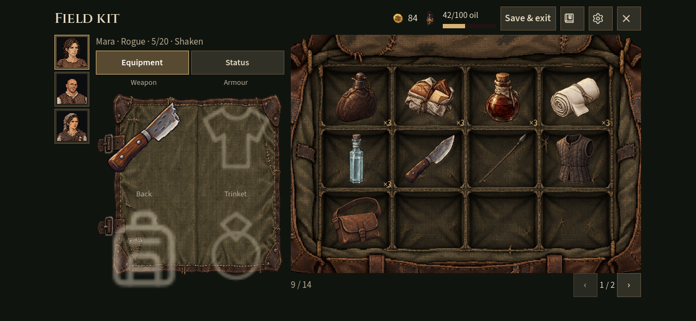

Backpack and selected hero

Actual Godot Mobile renderer captures using three heroes and real inventory. Hover or tap opens an item card in the game; the selector above switches saved views. Mouse and touch gestures are checked, including medicine dragged to a portrait or the selected hero area. Physical iPhone testing remains separate.
Current interface handoff · Recorded checks · Earlier layout